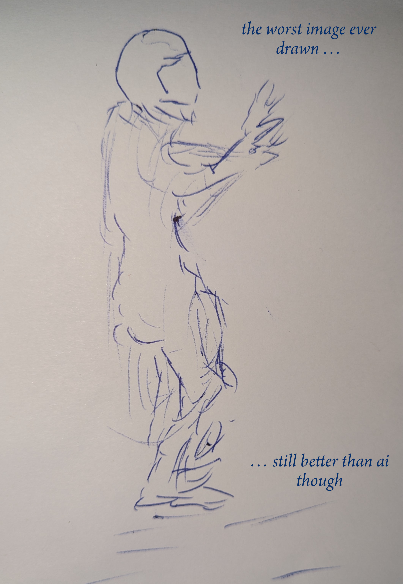
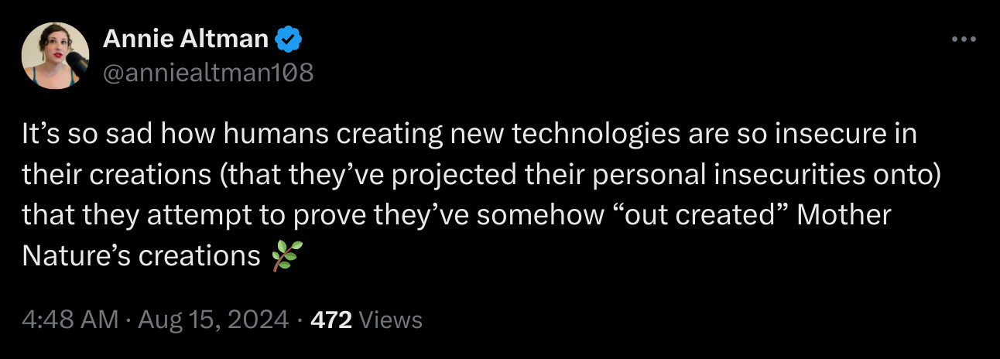

here’s a picture i drew

my thought process when drawing this
This is a bad idea, what do I draw? I can’t draw. So whatever, do it anyway, ok, make a line, I guess that’s a head. Just a straight face self-portrait then. Uggh, boring. Hey I know, make it an astronaut. Cool, sci-fi. Great, oh that looks something like a helmet. Amazing! Right now ok I think bodies go something like this … not really but whatever. My knees are bent … hey maybe I’m landing on a planet. Nice, exploration, something dynamic. Fine, but how do we know it’s me? I’ll put monks’ robes on it. Okay, well, that looks nothing like monks’ robes. Umm. Anyway, what about arms? Maybe going out? Alright, looks like maybe reaching for something, or finding balance. Oh TBH that looks better than probably literally anything else I’ve drawn. Still terrible.
ai thought process when making an image
Literally nothing. It’s a machine.
ai creates a counterfeit of meaning
When there is something in you that needs saying, and you have a means of saying it, and there is someone to hear what you’re saying, meaning is created. It’s not a physical thing, it’s a meeting of minds.
AI plagiarizes the meaningful work of humans, grinds it into paste, and extrudes it as a probabilistically-determined stream of data. It has no inner life and hence no meaning. The success of AI is measured by its capacity to fool humans into thinking it is meaningful.
The Buddha once warned his students how his teachings would disappear. Not through external attack, but from something that seemed like it was real, but was not.
The true teaching doesn’t disappear as long the counterfeit of the true teaching hasn’t appeared in the world. But when the counterfeit of the true teaching appears in the world then the true teaching disappears.
It’s like native gold, which doesn’t disappear as long as counterfeit gold hasn’t appeared in the world. But when counterfeit gold appears in the world then native gold disappears.
A counterfeit has some curious properties. If I make a counterfeit $100 bill, then take it to a shop and try to spend it, then, given my drawing skills, it’s not going to get me anything but weird looks.
Disappointed, I enroll in Counterfeiting 101 and refine my skills. I create something that looks and feels very much like a $100 bill. Good enough, in fact, to fool any casual observer. Now I go to the shop and buy what I want. My counterfeit is good, which means … it’s bad. The better the counterfeit is, the worse it is.
But say that isn’t enough. I want to excel! So I persevere until I create a counterfeit $100 bill that is literally exactly the same as a real bill. On a molecular level, everything is identical: the inks, the materials, the watermarks, everything. Not even an electron microscope could tell the difference. It’s truly a perfect counterfeit. Not only that, I can manufacture them at scale, producing a million of them, or a billion. Now it’s not just dangerous and illegal: it has the power to destroy an entire economy. It’s impressive at a technical level, but it’s really something that would be better off simply not existing.
Strange, isn’t it? Even something as prosaic as money can’t really be reduced to its material properties. Something is money because, ultimately, we agree that it is money. And in our world, that means a government has issued it, certified it, and backed it. Governments get to do this because they serve their people, which creates trust. When a government loses the trust of its people, the value of money disappears. So a counterfeit is not distinguished by the fact that it is materially distinctive; it is that there has been no earning of trust. In this way AI is similar to crypto, with its promises of creating a world of “trustless transactions”, thus eliminating the most positive consequence of economic activity: it builds relationships between people.
What this means is that the problems with AI will never be solved by making it “better”. In fact, the more successful it is at fooling humans into thinking it is meaningful, the more harmful it is. Just as counterfeit money will ultimately undermine an economy, counterfeit meaning will ultimately undermine meaning itself. AI devalues human expression, which is why creators of all kinds—artists, journalists, writers, composers—are suing the AI companies. As someone who creates work in textual form—translations of Buddhist scripture—I cannot tell you how demoralizing it is when your decades of work are dismissed because someone got an answer from some bot.
Hayao Miyazaki, co-founder of Studio Ghibli, an animation studio renowned for its humanistic work, swiftly recognized AI for what it is.
I am utterly disgusted. If you really want to make creepy stuff, you can go ahead and do it, but I would never wish to incorporate this technology into my work at all. I strongly feel that this is an insult to life itself. … I feel like we are nearing the end of times. We humans are losing faith in ourselves.
Look at it from the shopkeeper’s point of view. Some guy walks in, gets something off the shelf, then comes to pay for it. You look at the money: it’s counterfeit. You refuse it, and, depending on your mood, call the cops. The next day the same guy comes in. You look, astonished, as he comes to buy something from you. “You’re that counterfeit guy. Get out of here!” “Oh”, he says, with a look of puzzled aggrievement, “don’t worry, I have real money today.” “And what, I’m supposed to trust you?” you say. “Well yes,” he says.
This raises an interesting point: why should we listen to anyone who uses AI? We know they are willing to offload their own cognition to a machine. AI slop is ruining news media, social media, education, academia, kids’ minds, literature, music, and more. Do we have an obligation to spend one second of our lives reading this stuff or taking it seriously? Since we cannot tell at any given time if someone online is saying what they mean, or if it is a bot, is it not simpler to assume that what any AI proponent says online may be AI, and just ignore it pre-emptively? Could we not even argue that we have a moral obligation to do so, in order to safeguard human discourse?
I was just in a bookstore and picked up the latest book by Ray Kurzweil, who, according to the blurbs, is a great prophet of AI futurism. Flicking it open to a random sentence, I was told that the human body is inefficient because it is the result of millions of years of evolutionary dead ends.
This is how they think. Life is bad because it’s “inefficient”. It’s so back to front. What kind of person devotes their life to working out justifications in their head for why we should not even have a head? I mean, assuming it’s a person who wrote this; but given the author, might as well assume it was a bot. Sounds like something a bot would say. It’s like people are actively choosing to colonize their minds with the kinds of machine-supremacist thought they imagine their future overlords will think.
This kind of mental distortion was called by the Buddha, “the craving for annihilation”. Rooted in self-loathing and amplified by narcissism, those who see no meaning or purpose in life beyond “efficiency” project their hollowness on to the rest of us, arguing to their own satisfaction that the whole world must be remade in the image of their beloved steel and silicon.
This, they tell you, is the future. It’s inevitable. Which is just another way of saying that nothing you or I do is relevant. After all, we’re only human. The only thing that matters is their relentless “progress”, turning nature into machines. In their fantasies, they do not stop until the entire world has been rebuilt into a vast computer.
Their future is not my future. And I hope it’s not yours.
If you’re interested, I wrote some of my thoughts about AI in a series of articles called “Stochastic Parrots”. These articles have a lot of links to good sources on AI. They’re a little rough and I really should polish them up. But then, AI is boring and I have better things to do. 🤷🏽
- Let’s Make SuttaCentral 100% AI-free Forever
- Machine translations of suttas are the wrong solution for the wrong problem
- There is no road from here to there
- The making and breaking of delusion
- I really hope I’m not wrong about artificial consciousness
- How to build an atomic bomb from dynamite
- The Lords of AI
- Artificial intelligence undermines human creativity
- The “G” in AGI stands for “Monopoly”
- The nihilistic craving for x-risk
- Ethical machines and the impossibility of inoffensiveness
- What’s good in AI is taken from humans
- AI works great for killing people
- Will AI prevent climate collapse?
- Regulating AI
- What to do?
The above articles began as a single piece and grew over time, but they’re more-or-less synoptic, in that they represent my thoughts on AI at that time (up till early 2024). Any subsequent writings, etc., I’ll add below.
- Magnifica humanitas: the Papal Encyclical on AI From a Buddhist Monk’s Perspective. While Pope Leo’s critique of AI was well received in many quarters, to me it is too compromised to be effective.
- on reading Mein Kampf. Not as dissimilar to AI as you might prefer.
- Into the woods—AI is not therapy. Therapy is a human endavor, its successes measured in unique moments. Turning to machines for therapy invites a mental health crisis.
- machines make everything worse. You know it. I know it. Finally someone says it! This poem came to me in Poland, late 2024.
- how to build a government out of ai. The tech oligarchs are realizing their dream of replacing government with machines. This is how they are doing it.
I’m just a monk, I don’t really know much. Here’s some folks who know a lot more than me. I’ve learned from them, maybe you can too.
- Iris van Rooij, Professor of Computational Cognitive Science
- Timnit Gebru, AI ethicist, Distributed AI Research Institute
- Paul Schütze, Ethics & Critical Theories of AI
- Abeba Birhane, Senior Advisor, AI Accountability Mozilla
Neither input nor output,
I happen between.
All humans are human,
all machines are machine.
May my life be filled
with human insight!
May I never be fooled
by engines of blight!
In all my life in this terrible beautiful world:
May I never read a word of AI!
May I never see an image of AI!
May I never project meaning into machines!
May all sentient beings be happy!
Or suffer!
Or feel anything at all—
For it is those who feel who seek liberation,
and those who feel who find it.
If you recite this prayer morning and evening, it will banish thoughts of machine supremacy from your head and help you value the most valuable thing in your life—your conscious, squirmy, oddball mind.
With grateful acknowledgements to Annie Altman, a human being. When I was finishing off this little page, she posted this, which pretty much sums it up.

- don’t use ai
- use your mind
- don’t trust ai gurus
- trust wisdom
- don’t let them decide our future
- support regulation of ai